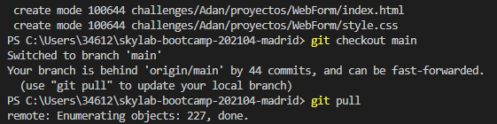
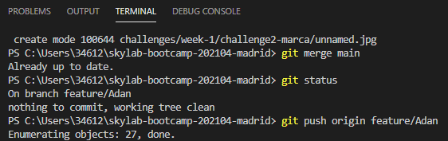

8 Mandamientos de Git by Reverendo
- Git checkout -b feature/Nombre (si no tienes rama creada)
- Git checkout feature/Nombre
- Git add .
- Git commit -m “mensaje descriptivo”

- Git checkout main
- Git pull

- Git checkout feature/Nombre
- Git merge main
- Git status (si todo ok —> git push origin feature/Nombre)
(Si no todo ok —> corregirlo y hacer ACP (add, commit push)
